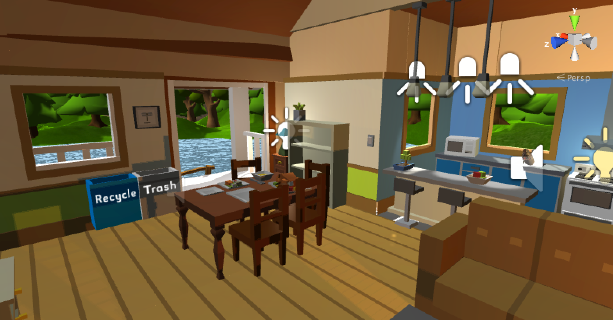

Eco Nut
Overview
Eco Nut is a VR game that aims to serve as a tool to raise environmental awareness. Most environmental games are typically designed to visualize energy saving efforts players make (e.g. MyEarth). However, instead of going for the traditional approach by showing the user what to do, such as recycling trash, unplugging all unused electronics, reduce water usage, etc, we came up with an idea to let the user do exactly the opposite of what one should do. If someone ever wondered what impact our daily activities have on the environment, this is a game that allows the player to virtually experience extreme results.
For example, the player is able to throw objects into the lake in Eco Nut to increase the water pollution level in the game, or turn on every electronics in the house to overload the power plant. As the level of destruction increases, there are different visual and aural effects triggered. The main goal of the game is to reach 100% destruction level for all three indicators, which are water pollution level, forest destruction level, and power plant capacity. In the end of the five minute gameplay time, the user will be given a virtual medal as an reward and indicator of how “nutty” he or she is.
Please check out the Eco Nut project page for a week by week run down of the design decisions and development process of Eco Nut.
Unity C# Game Development
I created scripts that controlled the first-person reticle, interactions with objects, and environment transitions. I also created scripts to deal with object collisions and Gazelle pathing. I also helped Storyboard the game.